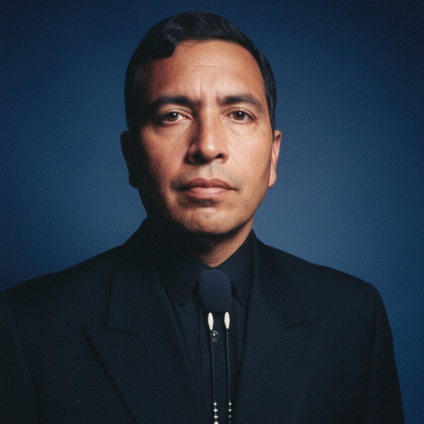

El Príncipe de los Predicadores en Chalatenango
"Porque yo sé los pensamientos que tengo acerca de vosotros, dice Jehová, pensamientos de paz, y no de mal, para daros el fin que esperáis."— Jeremías 29:11

Pastor General & Fundador
Nacido el 24 de diciembre de 1947, el Pastor Santos Esteban Sandoval Flores llegó a este mundo en una fecha que ya de por sí anuncia celebración — y celebración fue, en efecto, la marca de toda su vida. Una vida dada íntegramente al servicio del Señor.
Fundador de la Misión Iglesia Bautista El Salvador y de la Iglesia Bautista Central, el Pastor Sandoval no se conformó con levantar paredes. Levantó comunidades enteras. A lo largo de su ministerio, estableció más de once iglesias que hoy siguen proclamando el evangelio que él tanto amó.
Recibió su ordenación ministerial en el Seminario Teológico Bautista de San Salvador, formándose como pastor, teólogo, maestro y erudito bíblico — un hombre que estudiaba la Palabra con rigor académico y la predicaba con pasión.
En el pueblo, todos lo conocían con afecto como "Hermano Sandoval". Mas su impacto fue tan singular que bien merece el título que la historia le otorga: "El Príncipe de los Predicadores en Chalatenango" — pues fue él quien, a principios de los años 1970, llevó por vez primera el mensaje del Evangelio de Jesucristo a esa hermosa región.
El 20 de junio de 2007, Dios llamó a su siervo fiel a la morada eterna. Pero la semilla que plantó no murió con él — cada iglesia que fundó, cada pastor que ordenó y cada alma que escuchó su enseñanza son testigos vivos de una vida entregada por completo.
Ver su TrayectoriaNace Santos Esteban Sandoval Flores. Desde sus primeros días, la providencia de Dios trazaría en él un camino extraordinario de fe y proclamación.
Recibió su ordenación en el Seminario Teológico Bautista de San Salvador, equipándose como pastor, teólogo y maestro de la Palabra.
El primero en llevar el mensaje del Evangelio de nuestro Señor Jesucristo al pueblo de Chalatenango. Un precursor que abrió caminos donde no los había.
Conductor del programa radial transmitido por Radio Chalatenango y Radio Voz de Occidente en Santa Rosa de Copán, Honduras — alcanzando miles de hogares cada semana.
Fundó la Misión Iglesia Bautista El Salvador, la Iglesia Bautista Central, y estableció otras nueve iglesias. Ordenó ministerialmente a más de 15 pastores que continuaron su obra.
El Señor llamó a su fiel siervo a descansar en su presencia eterna. Su legado de fe, predicación y amor por las almas permanece vivo en cada iglesia que fundó y en cada pastor que ordenó.
Cada faceta de su vida ministerial reflejaba la profundidad de su amor por Dios y por las almas.
Su predicación era un fuego que no se apagaba. Cada sermón era una invitación a la vida eterna, proclamada con una autoridad bíblica que nacía de rodillas. Su púlpito era donde cielo y tierra se encontraban.
Formado en el Seminario Teológico Bautista de San Salvador, su manejo de las Escrituras era profundo y preciso. Era a la vez teólogo riguroso y maestro accesible — un regalo raro.
Donde sus pies no podían llegar, su voz lo hacía. A través de las ondas, fue pastor de miles de familias que nunca conoció en persona — hogares en montañas remotas que encontraron esperanza encendiendo un radio.
Once iglesias fundadas. Cada una, un fruto permanente de su paso por este mundo. La Misión Iglesia Bautista El Salvador y la Iglesia Bautista Central son solo la punta del iceberg de su obra apostólica.
Ordenó a más de 15 pastores, multiplicando su ministerio más allá de lo que sus propias manos podían alcanzar. Su mayor sermón fue la vida de aquellos a quienes discipuló.
Así le llamaban con cariño en el pueblo. No con título ni pompa, sino con la ternura que solo se gana sirviendo con humildad. El más grande entre vosotros será vuestro servidor — y él lo entendió.
Su cuerpo descansó, pero su obra permanece viva.
"He peleado la buena batalla, he acabado la carrera, he guardado la fe. Por lo demás, me está guardada la corona de justicia, la cual me dará el Señor, juez justo, en aquel día."
— 2 Timoteo 4:7-8
11 de Agosto de 2004